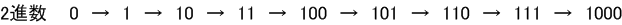
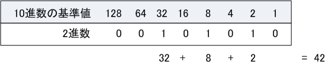
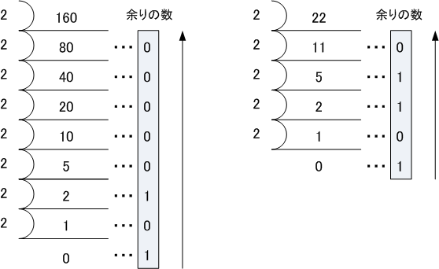

2進数 & 10進数 & 16進数 - Part 1
コンピュータで使用される2進数
人が日常使用している数値は10進数ですが、コンピュータは内部で数値を表現する場合、2進数を使用 しています。しかし、「0」と「1」だけの2進数では人が分かりにくいため、人間が見えるところでは コンピュータは2進数を10進数や16進数が変換して表現しています。ここではその変換方法を学びます。
2進数
2進数とは、｢0」と「1」の2種類の数字を用いて全ての数を表現します。10進数では0から数えて「9」の 次は位があがることになりますが、2進数では「 1 」の次に位があります。位があがれば、その新しい桁は ｢ 1 ｣ となり、それ以下の桁は全て 「 0 」 となります。それでは、2進数の数の増え方を見てみましょう。

ところで、2進数を表現する時は一般的に8桁単位で表現するため、8桁未満の場合は頭に0をつけます。 つまり、上の2進数の値は順番に 00000000 → 00000001 → 00000010 → 00000011 → 00000100 → 00000101 → 00000110 → 00000111 → 00001000 と表します。以下は2進数と10進数の対応表です。
| 2進数と10進数の対応表 | ||||||||||||
|---|---|---|---|---|---|---|---|---|---|---|---|---|
| 10進数 | 0 | 1 | 2 | 3 | 4 | 5 | 6 | 7 | 8 | 9 | 10 | ・・・ |
| 2進数 | 0 | 1 | 10 | 11 | 100 | 101 | 110 | 111 | 1000 | 1001 | 1010 | ・・・ |
2進数から10進数への変換方法
10進数と2進数の対応表は以下の通りです。2進数の桁が上がる時の10進数の値が以下となります。
| 2進数と10進数の対応表 | ||||||||
|---|---|---|---|---|---|---|---|---|
| 10進数 | 1 | 2 | 4 | 8 | 16 | 32 | 64 | 128 |
| 2進数 | 00000001 | 00000010 | 00000100 | 00001000 | 00010000 | 00100000 | 01000000 | 10000000 |
従って、2進数で｢1」となっている桁に対応する上記の10進数の基準値を合計することにより、2進数から 10進数の値を求めることができます。例えば、2進数の「 00101010 」を10進数に変換する場合、基準値が 32、8、2の所でビットが1なので下図の通り、2進数の「 00101010 」は10進数では「42」だと分かります。

10進数から2進数への変換方法
10進数の数値を「 0 」になるまで「 2 」で割り算していき、その結果の「余りの数 」を並べることで ある10進数の値を2進数の値へ変換することができます。それでは、具体的に変換して見て行きましょう。

例えば、10進数の「160」を2で割り算していくと上図の結果となります。後は、余りの数を下から順番に 並べれば 「 10100000 」 の値が算出されます。次に、「22」を2で割り算していき余りの数を下から順に 並べれば 「 10110 」 の値が算出されます。ネットワークにおいては、2進数を一般的に8桁で表示する ことから、8桁になるよう上位に「 0 」を追加して「 00010110 」とします。当然「 10110 」と同じ値。